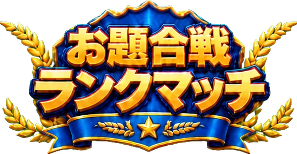
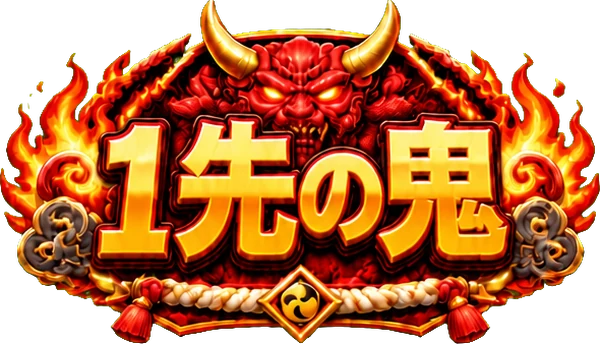
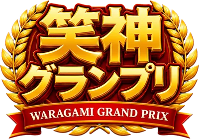
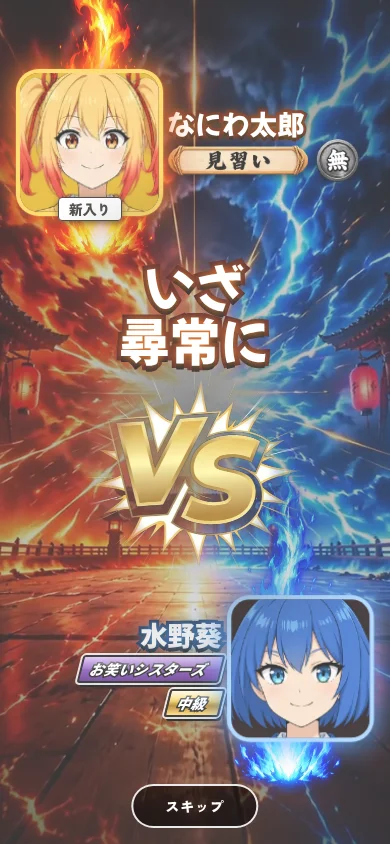
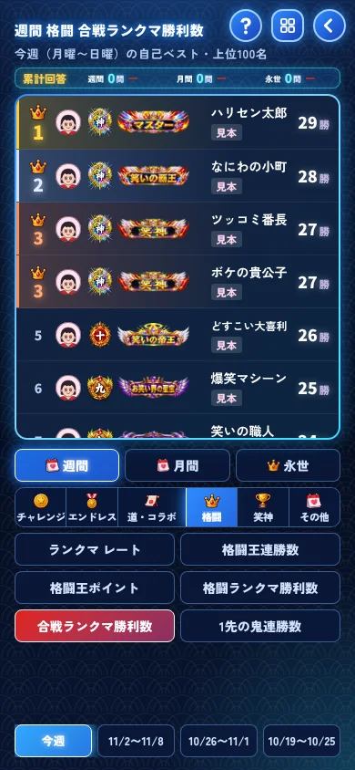

ランキング
お題合戦のレート、1先の鬼の連勝、笑神グランプリ。全国のライバルと、笑いの腕くらべ！
今週のランキング、受付中！
あなたの席、まだ空いてます。
???位？あなた1500から
- 初心者でもレート1500から
- 毎週リセットだから今週の1位も狙える
- 上位は記念の肩書きつき
ABOUT3つのランキング

お題合戦レート全国のだれかと同じお題に30秒で答えるランクマッチ。みんな1500から始まり、勝てば上がり、負ければ下がります。

1先の鬼1本先取の一発勝負で、どこまで勝ち続けられるか。連勝するほど鬼の称号が上がり、目指すは「閻魔」！

笑神グランプリ運営が出したお題に、全国のみんなで答える大会。「ええやん」の数で順位が決まり、上位は記念の肩書きがもらえます。



- レートは1500からスタート
- 1先の鬼は12段階の鬼の称号
- 笑神グランプリは7日間の大会
- 週間・月間・永世のランキング
RANKINGいまのランキング
ランキングに載るには？
- 1ゲームの対戦から「お題合戦ランクマッチ」や「1先の鬼」を選ぶ
- 2全国のだれかと自動でマッチング。勝てばレートや連勝が上がる！
- 3笑神グランプリは、開催中のお題に答えるだけでエントリー